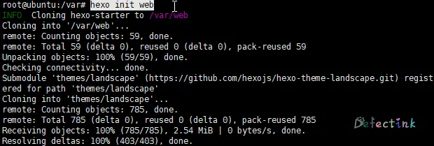
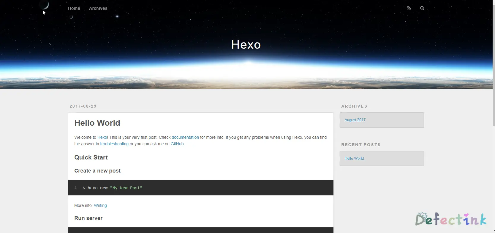

hexo
本文最后水于：2020年11月2日 凌晨
这是一篇写于较早期的文章，当时水平有限，文章质量不高。
好久不见
Hexo?
Hexo是一款博客页面框架。特点是简洁、高效。使用markdown语法渲染文章。
其大概原理将本地markdown编写的.md文件经过多次渲染为html等静态页面文件。再由hexo服务发布。
可参考：
- https://www.zhihu.com/question/51588481
- http://coderunthings.com/2017/08/20/howhexoworks/
- 中文官网： https://hexo.io/zh-cn/
安装
Ubuntu
hexo的安装过程简便，工作原理与其他blog程序都大不相同。
安装前提
安装 Hexo 相当简单。然而在安装前，必须检查电脑中是否已安装下列应用程序：
• Node.js
• Git
官方文档中提到安装所需要的上述应用程序，在ubuntu环境下Git在默认情况下为已经安装的。
若无git，可使用如下命令进行安装
apt install git首先安装npm与node.js
apt install npm nodejs-legacy
npm install -g hexo-cli界面可能会如下
等待npm install -g hexo-cli命令完成后，hexo就已经安装在系统中了
接下来就是使用hexo建立站点了，可参考官方文档： https://hexo.io/zh-cn/docs/setup.html
$ hexo init <folder>
$ cd <folder>
$ npm install配置
hexo init web
过程略长，稍等即可
init文件夹完成后，进入并安装
cd web && npm install完成后文件目录为如下。
新建完成后，指定文件夹的目录如下：
.
├── _config.yml
├── package.json
├── scaffolds
├── source
| ├── _drafts
| └── _posts
└── themes- _config.yml：站点的配置文件
- package.json：应用程序信息
- scaffolds：模版文件夹
- source：用户资源存放文件夹
- themes：主题文件夹
关于_config.yml的详细配置说明可参考官方文档： https://hexo.io/zh-cn/docs/configuration.html
服务端hexo-server
Hexo 3.0 把服务器独立成了个别模块，需要安装才能够使用。
npm install hexo-server --save安装完毕后，启动服务。（_config.yml需要先配置好）
hexo server -p 80 -s正常情况下便可以直接进行访问，为如下页面。

Cannot GET / ？
如出现运行服务端后访问提示为”Cannot GET / “，请尝试：
• 确保在init的目录下运行过npm install
• 添加了-s 参数，需要运行”hexo generate”命令生成静态文件。
无法打开？
• Hexo server默认端口号为4000，可用-p参数进行修改
• 需要在_config.yml配置文件中配置域名。
• 也可以使用-i命令修改监听的ip地址。默认为0.0.0.0
• 需要在所init的目录下运行server命令
Hexo server会占用整个shell，对于ssh连接来说，断开后便会中断服务。
我们可以使用screen命令搭配运行hexo server
screen hexo s -p 80 -s运行后按下Ctrl+a+d将当前窗口放置后台运行
查看screen -ls
重新连接会话screen -r 25211
写作
可以执行下列命令来创建一篇新文章。
$ hexo new [layout] <title>可以直接使用命令来创建文章，默认文件名为title
hexo new TEST可以看到创建的文章会被创建为source目录下的.md文件，可以直接使用markdown语法写作修改。
若是静态运行，每次修改文章后需要使用hexo generate命令渲染。
更多方式可以了解官方说明： https://hexo.io/zh-cn/docs/writing.html
结尾
Hexo是一款不同与其他的博客框架，其简洁、高效和多样性的用法也是吸引人的一大特点。无需数据库，所有文章都在统一文件夹内，真正纯静态化的站点。新颖、特殊的工作方式让人眼前一亮。由于与众不同的特点，hexo与markdown的方式还得日后慢慢学习使用。
此文完全参照与官方说明文档。